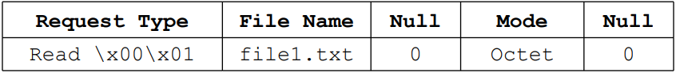

Behavior:
Connection request is combined with either a read or write request
Blocks of data are sent in a fixed 512 byte size (each block must be acknowledged for error control)
A block less than 512 bytes indicates the end of the stream
The first two bytes of a TFTP header indicates the request type and format
– \x00\x01 indicates a read request
– \x00\x02 indicates a write request
– \x00\x03 indicates the data block
– \x00\x04 is an acknowledgement
– \x00\x05 indicates an error
– \x00\x06 is an optional acknowledgement
Read and Write request format:
– \x00\x01 for read | \x00\x02 for write
– File Name
– Null byte - \x00
– Mode – Binary, ASCII or Mail
– Null byte - \x00
